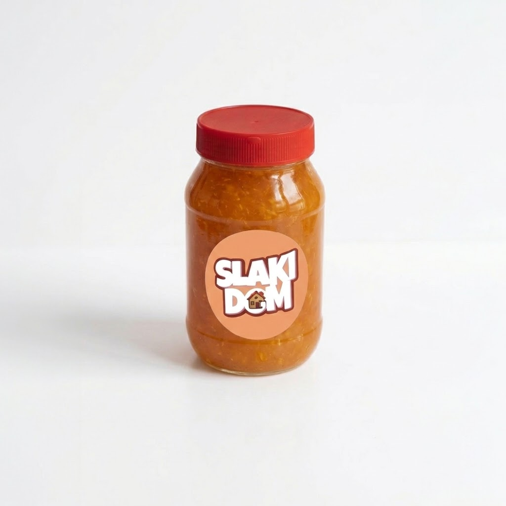

Mermelada de Durazno
$7
00
Bs. 0
Descripción del Producto
Deliciosa mermelada artesanal de durazno, elaborada con fruta fresca cocida a fuego lento con amor. Su sabor dulce y suave, combinado con la textura perfecta, la convierten en el acompañante ideal para tus galletas, panquecas o tostadas.
Cada frasco es preparado a mano con la receta familiar de Slaki Dom, utilizando solo duraznos seleccionados y sin conservantes artificiales, para que disfrutes del auténtico sabor de la fruta en cada cucharada.
Características:
- Fruta fresca 100% natural
- Elaborada artesanalmente
- Conservación: Refrigerar después de abrir
- Sin conservantes artificiales
- Presentación: Frasco de vidrio 445g
- Duración: 21 días refrigerado aproximadamente